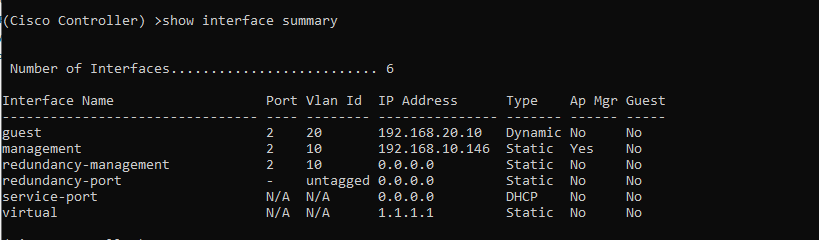
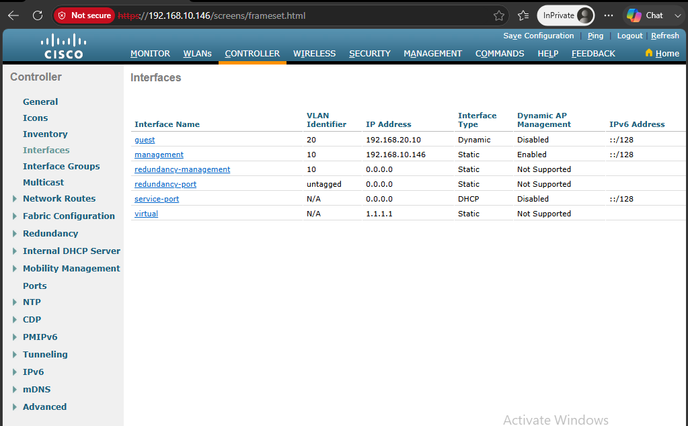
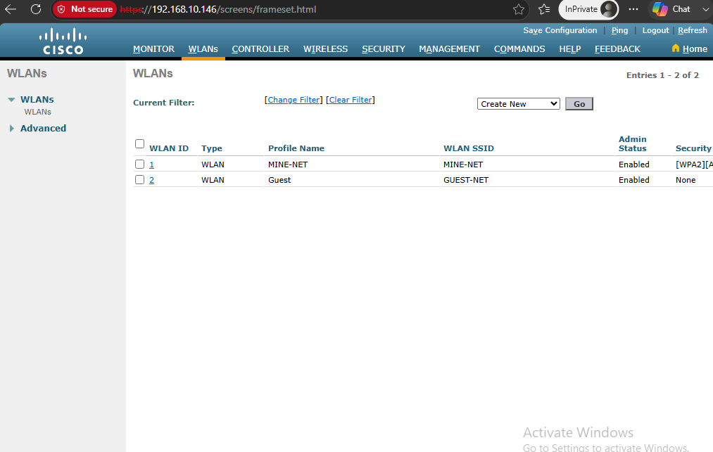
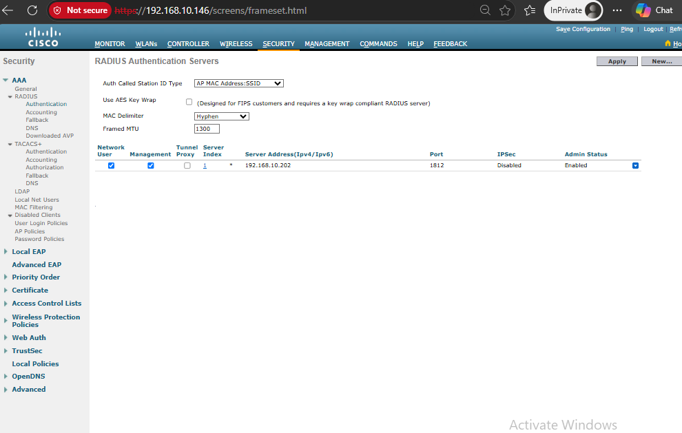
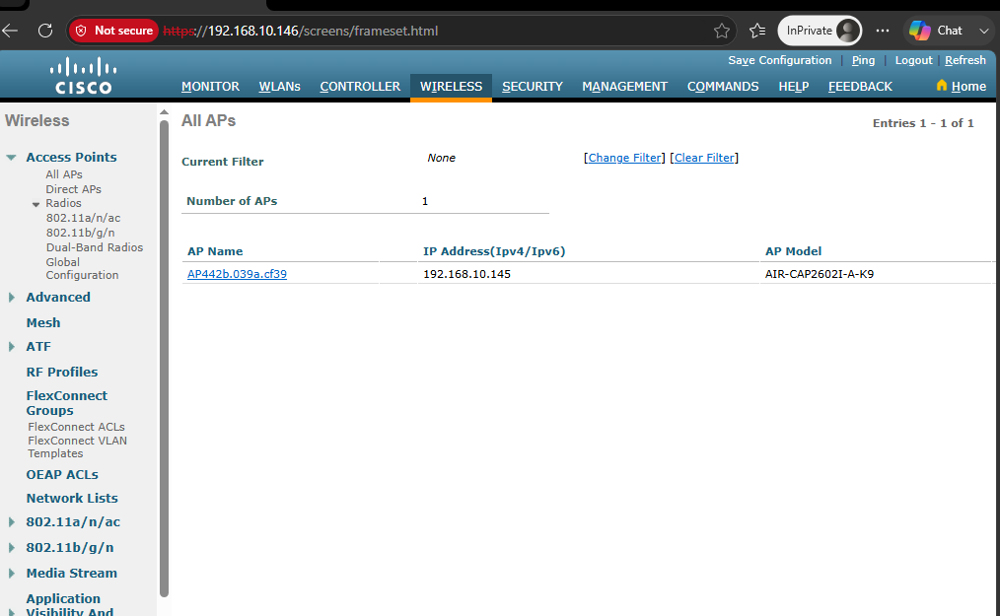
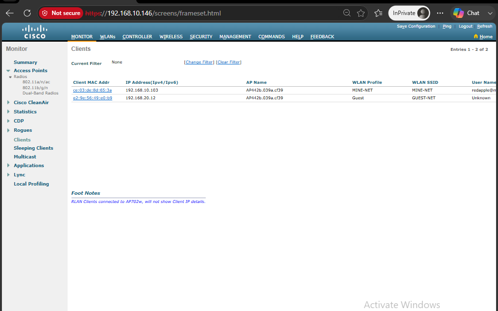

Tools Used
- Cisco WLC 4504
- Cisco Aironet AIR-CAP2602I-A-K9 Access Point
- Distribution Switch: Cisco Nexus 9372PX-E Switch
- Access Switch: Cisco Catalyst 2960
- DHCP Server: ubuntu server vm on vmware
- Active Directory (AD), DNS, and NPS/RADIUS Server on physical Cisco UCS C220 M4
Requirements
- DHCP Server: A DHCP server is required for the wireless network. The DHCP server must be reachable from VLAN 10 and VLAN 20, with the appropriate DHCP scopes configured.
- Active Directory, DNS, and NPS/RADIUS: Active Directory, DNS, and Network Policy Server (NPS) are required for RADIUS authentication and centralized wireless user authentication.
- Distribution and Access Switches: The WLC should be connected to the network through a trunk port. The Access Point should be connected to an appropriate access port on the access switch.
- VLANs: The required VLANs must be created and available across the network. In this example, VLAN 10 is used for management/internal traffic and VLAN 20 is used for the Guest wireless network.
- Network Connectivity: Routing, gateways, DHCP, DNS, and RADIUS connectivity must be working before testing the wireless network.
WLC Setup
- Assign an IP address to the WLC management interface. Configure the management IP address, subnet mask, default gateway, and other required network settings.
- Connect the WLC to the switch. Connect the WLC to the appropriate switch trunk port and make sure the required VLANs are allowed on the trunk.
- Access the WLC Web GUI. After confirming network connectivity, access the WLC management interface using a web browser.
- Connect the Access Point. Connect the AP to the access switch. The AP should obtain an IP address through DHCP and attempt to discover and join the WLC.
- Verify the AP connection. Log in to the WLC and verify that the AP has successfully joined.
- Troubleshoot if the AP does not join. Check DHCP, VLAN configuration, IP connectivity, AP discovery, compatibility, and WLC settings. Review the AP join status and WLC logs for additional information.
- Configure AP policies. If not joined, check/test/change the AP policies
- Confirm the AP is listed. A successfully joined AP should appear in the WLC's AP management or wireless AP list.
Configure the Wireless Interface
- Log in to the WLC Web GUI.
-
Navigate to:
Controller > Interfaces - Click New to create a new dynamic interface.
-
Enter the interface information. Example:
- Interface Name: Guest
- VLAN ID: 20
- IP Address: Appropriate VLAN 20 address
- Subnet Mask: VLAN 20 subnet mask
- Default Gateway: VLAN 20 gateway
- Save the configuration.
The WLC dynamic interface maps the wireless SSID to the appropriate VLAN.
In this example, the Guest SSID is mapped to VLAN 20.
Configure the Wi-Fi SSID
-
Navigate to:
WLANs - Create a new WLAN.
-
Enter the WLAN information. Example:
- Profile Name: Guest
- SSID: Guest
- Enable the WLAN.
- Select the dynamic interface created earlier. For example, select the Guest interface associated with VLAN 20.
- Save the WLAN configuration.
Configure Wi-Fi Security and RADIUS
- Open the security settings for the WLAN.
- Under Layer 2 security, select the appropriate WPA/WPA2 security option.
- Enable the required encryption method, such as AES, and select the appropriate WPA2 policy.
- Configure RADIUS/AAA authentication for centralized authentication.
-
Add the RADIUS server under:
Security > AAA > RADIUS > Authentication - Enter the RADIUS server IP address and shared secret.
- Return to the WLAN security settings and select the configured RADIUS authentication server under the AAA server settings.
- Save and apply the configuration.
Important:
The RADIUS shared secret configured on the WLC must match the shared
secret configured for the WLC as a RADIUS client on the NPS server.
Testing and Verification
- Connect a wireless client to the new SSID.
- Verify that the client successfully authenticates.
- Verify that the client receives an IP address from the correct DHCP scope.
- Confirm that the client is placed in the correct VLAN.
- Test connectivity to the required network resources.
- Verify the connected client in the WLC wireless client list.
- If authentication fails, check the NPS logs, RADIUS configuration, shared secret, user/group permissions, and WLAN security settings.
Configuration Evidence
The following screenshots provide evidence of the wireless configuration. Click any image to view it in full size.

WLC Overview

WLC Interface IP Configuration

Wireless VLAN Configuration

Wireless SSID List

RADIUS Server Configuration

Access Point List

Wireless Client List
×